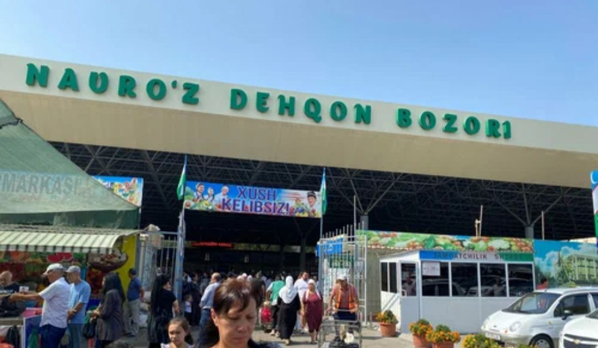
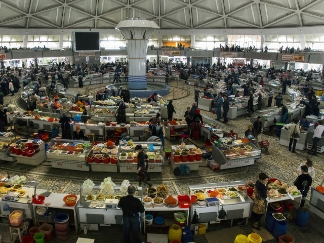

" Toshkentdagi ikkita bozor to'liq rekonstruksiya qilinadi"
Poytaxtdagi yirik savdo maydonlari rekonstruksiya qilish orqali shaffof savdo, ularning qonuniy faoliyatini qo'llab-quvvatlash , naqdsiz hisob-kitoblar ulushini kengaytirish maqsad qilinmoqda.
Toshkent shahrida joylashgan «Navro‘z» dehqon bozori hamda «Buz bozor» shoxobchasi to‘liq rekonstruksiya qilinadi. Bu haqda Mirzo Ulug‘bek tumani axborot xizmati xabar berdi.

21-yanvar kuni Mirzo Ulug‘bek tuman hokimi Bahodir G‘oibnazarov, Toshkent shahar prokurorining birinchi o‘rinbosari A.A.Urmanov, prokuror o‘rinbosari U.T.Mamarajabov, Mirzo Ulug‘bek tuman prokurori O.M.Mannanov tomonidan bozorlar faoliyati o‘rganilgan. O‘rganishlar natijasida bozorlarni bosqichma-bosqich raqamlashtirish, savdo jarayonlarida ochiqlik va shaffoflikni ta’minlash bo‘yicha kompleks chora-tadbirlar belgilab olingan.
«Shu bilan birga, bozor hududi to‘liq rekonstruksiya qilinib, zamonaviy infratuzilma asosida qayta tashkil etiladi. Bozor hududida maxsus vaziyat markazi tashkil etilib, bozorning yagona «markazi» sifatida barcha iqtisodiy, moliyaviy va nazorat jarayonlarini muvofiqlashtiradi», — deyiladi xabarda.
Ma’lumotlarga ko‘ra, loyihalashtirish jarayonida bozorlarning umumiy arxitekturasi va ichki dizayni chuqur tahlil qilinib, ilg‘or xalqaro standartlar asosida qayta ishlangan. Bu yondashuv savdo subyektlarining qonuniy faoliyatini qo‘llab-quvvatlash, naqdlsiz hisob-kitoblar ulushini kengaytirishni maqsad qiladi.

«Natijada soliq bazasi kengayib, mahalliy byudjet daromadlari sezilarli darajada oshishi kutilmoqda. Islohotlar, tadbirkorlar uchun qulay shart-sharoit yaratish, aholiga sifatli xizmat ko‘rsatish hamda qonuniylikni mustahkamlashga qaratilgan. Mazkur tashabbuslar davlat organlari va jamoatchilik o‘rtasida o‘zaro ishonchni oshirib, shahar iqtisodiyotining barqaror rivojlanishiga xizmat qiladi», — deyilgan hokimlik xabarida.
Mazkur loyihaning asosiy mazmuni shundan iboratki, "Navro‘z" va "Buz bozor" endi shunchaki oddiy savdo rastalari to‘plami emas, balki yuqori texnologiyali logistika va savdo majmuasiga aylantiriladi. Rekonstruksiya davomida bozorlarning ichki muhandislik tarmoqlari, ya’ni elektr energiyasi, suv va kanalizatsiya tizimlari butunlay yangilanadi, bu esa oziq-ovqat mahsulotlarini saqlashda sanitariya me’yorlariga to'liq amal qilish imkonini beradi. "Vaziyat markazi"ning tashkil etilishi esa bozor ma’muriyatiga narx-navoni real vaqt rejimida kuzatib borish, sun’iy narx oshirilishining oldini olish va xavfsizlikni yuqori darajada ta’minlash imkonini beradi. Shuningdek, loyihada avtoturargohlar muammosiga ham alohida urg‘u berilgan bo‘lib, tashrif buyuruvchilar uchun zamonaviy va keng parking hududlari barpo etilishi ko‘zda tutilgan. Raqamlashtirish jarayoni esa nafaqat to‘lovlarni, balki tadbirkorlarning joy ijarasi va boshqa majburiy to‘lovlarini ham onlayn formatga o‘tkazib, korrupsion holatlarga chek qo‘yishni maqsad qilgan. Bu islohotlar pirovardida bozorning estetik ko'rinishini yaxshilash bilan birga, iste'molchilar uchun qulay va madaniyatli xarid muhitini yaratadi.